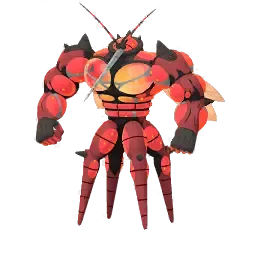
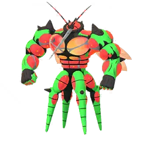

Raid Boss Overview – Buzzwole
Buzzwole is one of the Ultra Beasts in Pokémon GO, and in raids it stands out because of its huge physical bulk and strong Attack stat. It’s a Bug/Fighting-type that can feel surprisingly tough if you go in without proper counters.
Why Buzzwole is Worth Paying Attention To
Ultra Beast Collection
- Needed if you’re completing your Ultra Beast collection
- Often returns during special events and raid rotations
- Featured during Go Fest–style events and limited raids
In PvE (Raids & Gyms)
- Buzzwole can also be used as a solid Fighting-type attacker
- Works well against:
- Normal-type Pokémon
- Rock-type Pokémon
- Steel-type Pokémon
- Dark-type Pokémon
In PvP
- Has a niche role in Ultra League
- Good mix of bulk and Fighting-type pressure
- Can catch opponents off guard, especially Dark or Normal-heavy teams
Event Importance
- Usually appears during Ultra Beast raid rotations
- Sometimes tied to global events like Pokémon GO Fest
How Hard Are Buzzwole Raids?
Overall difficulty: High (around 3.5–4/5)
Why Buzzwole Feels Tough
High bulk
- Buzzwole can take a lot of damage before going down
- Even strong counters need time to bring it down
Strong damage output
- Its Fighting and Bug moves hit harder than expected
- Unprepared teams can get punished quickly
Limited but important weaknesses
- Flying
- Fire
- Psychic
- Fairy
Difficulty depending on group size
| Team Size | Difficulty |
|---|---|
| Solo | Not possible |
| 2 players | Very difficult |
| 3 players | Challenging but doable |
| 4–6 players | Comfortable |
| 7+ players | Very easy |
Best Strategy in Simple Terms
If you’re going into this raid, Flying-types are your safest bet. They deal super effective damage and make the fight much easier overall.
- Flying-type attackers are the top priority
- Psychic-types work as a reliable backup
- Fire-types can help depending on your lineup
Some strong examples include top-tier Flying attackers like Rayquaza-style Pokémon and high DPS Psychic attackers.
Buzzwole – Move Analysis (PvP + Raids)
Buzzwole is a Bug/Fighting Ultra Beast that hits hard and doesn’t go down easily. In both PvP and raids, its performance mostly depends on how well you build around its fast energy generation and strong Fighting-type pressure.
- High Attack stat that makes its moves hit noticeably hard
- Good bulk compared to most attackers
- Solid niche in PvP formats like Ultra League
- Reliable Fighting-type option for raids
Fast Moves
Buzzwole’s fast moves are all about energy gain and setting up charged attacks quickly. One move clearly stands out above the rest.
| Move | Type | Role | PvP Value | PvE Value |
|---|---|---|---|---|
| Counter | Fighting | Best overall fast move | ⭐⭐⭐⭐⭐ | ⭐⭐⭐⭐⭐ |
| Poison Jab | Poison | Coverage option | ⭐⭐⭐ | ⭐⭐ |
| Lunge | Bug | Situational fast pressure | ⭐⭐⭐ | ⭐⭐⭐ |
Simple takeaway
- Counter is basically non-negotiable
- It gives the best mix of damage + energy gain
- It also lines up perfectly with Buzzwole’s Fighting charged moves
Charged Moves
This is where Buzzwole actually decides fights. Its charged moves range from raw damage to utility-based pressure depending on how you build it.
| Move | Type | Power | Energy Cost | PvP Rating | PvE Rating |
|---|---|---|---|---|---|
| Superpower | Fighting | Very High | Medium | ⭐⭐⭐⭐⭐ | ⭐⭐⭐⭐⭐ |
| Lunge | Bug | Medium | Medium | ⭐⭐⭐⭐ | ⭐⭐⭐ |
| Power-Up Punch | Fighting | Low (buff move) | Low | ⭐⭐⭐⭐⭐ | ⭐⭐ |
| Fell Stinger | Bug | Low + Attack boost | Low | ⭐⭐⭐⭐ | ⭐⭐ |
Best PvP moveset:
- Counter + Superpower + Lunge
Alternative build:
- Counter + Power-Up Punch (for a more buff-oriented playstyle)
Raid Boss Moves
When you’re facing Buzzwole in raids, its moveset matters a lot because it can punish weak counters pretty quickly if you’re not careful.
Fast Moves to watch out for
| Move | Type | Danger Level | Why it matters |
|---|---|---|---|
| Counter | Fighting | Very High | Shreds Rock, Ice, and Dark attackers |
| Poison Jab | Poison | Medium | Applies steady pressure on Fairy types |
Charged moves to respect
| Move | Type | Danger Level | Impact |
|---|---|---|---|
| Superpower | Fighting | Very High | Can heavily damage or knock out glass cannons |
| Lunge | Bug | High | Reduces your damage output, slowing the raid |
| Fell Stinger | Bug | Medium | Can snowball if it starts stacking buffs |
Raid Strategy Insight
Buzzwole feels threatening mainly because of a combination of high Attack and strong Fighting-type pressure. If you don’t bring the right counters, it can overwhelm weaker teams.
- Flying-types are your safest and most consistent option
- Fire-types work well as secondary DPS picks
- Psychic-types are usable but depend on moveset
Try to avoid relying on:
- Dark-types that get pressured too hard by Fighting/Bug damage
- Very fragile Ice or Rock attackers that faint too quickly
Buzzwole Performance Guide
Buzzwole is a Bug/Fighting Ultra Beast that looks impressive on paper thanks to its high Attack and solid bulk. In practice, its performance really depends on where you use it — raids, gyms, or PvP all feel very different for this Pokémon.
PvE (Raids & Gyms Offense)
Where Buzzwole actually performs well
- Dark-type raid bosses like Tyranitar
- Normal-type raid bosses
- Rock and Steel types (depending on movesets)
Best raid moveset
- Counter + Superpower
- Alternative option: Lunge for utility, but it sacrifices damage output
How it compares in PvE
- A solid Fighting-type attacker overall
- However, it’s usually outclassed by top-tier options like:
- Lucario
- Conkeldurr
- Terrakion
Gyms (Attacking & Defending)
As an attacker
- Works well against Normal and Dark-type defenders
- Can clear gyms quickly with Counter + Superpower
- Still, you need to be careful of Flying-type counters in return
As a defender
- Buzzwole is not a practical gym defender
Reason
- Common weaknesses to Flying, Psychic, and Fairy attacks
- Typing doesn’t hold up defensively in gym meta
- Most attackers can take it down without much effort
PvP (GO Battle League)
In PvP, Buzzwole is more of a niche pick that can perform well in the right matchups, especially when it gets to apply pressure early with Counter and Lunge.
What it does well
- Strong bulky Fighting-type presence
- Consistent pressure with Counter-based fast moves
- Lunge can lower the opponent’s Attack and swing momentum
Where it struggles
- Flying-types are a major problem and often force switches or losses
- Fairy and Psychic cores can outlast it
- Needs smart shield management to perform well
Great League
- Not available due to high CP
Ultra League
- One of its better PvP environments
- Useful against Dark and Steel types
- Can perform well against Pokémon like:
- Giratina
- Obstagoon
- Various Steel-type Pokémon
Recommended moveset:
- Counter + Lunge + Superpower
Master League
- Struggles heavily in the legendary-heavy meta
- Flying Dragons dominate it in most matchups:
- Rayquaza
- Dragonite
- Togekiss
Performance in PvP Cups
Fighting Cups
- Performs noticeably better due to restricted metas
- One of the more reliable bulky Fighting options
Ultra League Premier
- Decent performance, but not always consistent
- Often depends on shield advantage to win key matchups
Limited / Special Cups
- Can become surprisingly strong when Flying-types are restricted
- Performs better in more controlled metas
Buzzwole Raid Strategy Guide
Buzzwole is one of the tougher Ultra Beast raids in Pokémon GO, mainly because of its high bulk and strong Fighting-type damage. If your team isn’t prepared with Flying-types, the raid can feel slower and more punishing than expected.
Raid Difficulty Overview
| Team Size | Difficulty |
|---|---|
| Solo | Not realistic |
| 2 players | Very challenging |
| 3 players | Doable with strong teams |
| 4–6 players | Comfortable |
| Large group | Very easy |
Best Pokémon Types to Use
| Type | Effectiveness |
|---|---|
| Flying | Best option (double super effective pressure) |
| Psychic | Works, but less consistent |
| Fire | Situational backup |
How to Approach Buzzwole Raids
The entire raid revolves around one idea — bring strong Flying-types and keep pressure high.
If you’re just starting out, focus on simple high-DPS Flying Pokémon and avoid overthinking mechanics.
- Rayquaza
- Staraptor
- Honchkrow
- Moltres
What usually goes wrong for newer players is bringing Fighting or Dark types, which get punished quickly by Buzzwole’s own Fighting/Bug pressure.
Mid-Level Strategy
Once you’re more comfortable, the goal shifts to maximizing Flying-type damage while staying efficient with relobbies.
- Mega Rayquaza
- Yveltal
- Shadow Moltres
- Mega Pidgeot
At this stage, Mega coordination matters a lot more. If your group stacks Flying-type Megas, the raid becomes noticeably faster.
Advanced Raid Play
Experienced groups usually focus on efficiency rather than survival.
- Rotate between top Flying Megas like Mega Rayquaza and Mega Pidgeot
- Pre-build second teams to avoid downtime
- Re-enter immediately after fainting instead of healing in battle
Windy weather is especially valuable here, since it significantly boosts Flying-type damage and shortens raid time.
Expert-Level Strategy
At the highest level, Buzzwole raids are mostly about speed and optimization.
Ideal conditions include maxed-out Flying attackers, best friend bonuses, and coordinated Mega usage.
| Pokémon | Recommended Moves |
|---|---|
| Mega Rayquaza | Air Slash + Dragon Ascent |
| Shadow Moltres | Wing Attack + Sky Attack |
| Yveltal | Gust + Oblivion Wing |
| Mega Pidgeot | Gust + Brave Bird |
Solo & Small Group Reality
Buzzwole is not a practical solo raid unless conditions are extremely boosted and resources are heavily optimized.
Duo raids are possible but require strong coordination, while trio raids are where Buzzwole becomes consistently manageable for skilled players.
- Use Flying Megas on both accounts in duos
- Avoid unnecessary dodging unless you’re using fragile attackers
- Stick to high DPS teams for faster clears
Weather Impact
| Weather | Effect |
|---|---|
| Windy | Best condition for faster clears |
| Cloudy | Boosts Buzzwole’s Fighting attacks |
| Rainy | Neutral |
| Snow | Neutral |
Key Threat Moves
| Move | Danger Level | Why it matters |
|---|---|---|
| Superpower | ⭐⭐⭐⭐⭐ | Massive burst damage that can KO fragile attackers |
| Lunge | ⭐⭐⭐⭐ | Reduces your damage output and slows raid pace |
| Power-Up Punch | ⭐⭐⭐ | Can snowball pressure if not handled quickly |
Buzzwole Raid Counters Guide
Buzzwole is one of those raid bosses where preparation really matters. On paper it has only a few weaknesses, but in practice, Flying-types make this raid much easier and faster compared to anything else.
What Makes Buzzwole Dangerous
Before picking counters, it helps to understand what you’re dealing with:
- Very high Attack stat for a raid boss
- Strong Fighting-type pressure with moves like Counter and Superpower
- Decent bulk that can slow down weaker teams
Best Overall Raid Counters
| Pokémon | Why It Works |
|---|---|
| Mega Rayquaza | Highest Flying-type DPS in the game |
| Mega Pidgeot | Strong Mega boost for the whole team |
| Shadow Moltres | Extremely high Flying damage output |
| Rayquaza | Reliable high DPS Flying attacker |
| Yveltal | Strong Flying/Dark hybrid attacker |
| Staraptor | Budget-friendly Flying DPS option |
| Moltres | Consistent and easy-to-use attacker |
| Honchkrow | High damage but very fragile |
Top Tier Counters Explained
Mega Rayquaza
- Best overall choice for this raid
- Insane Flying-type damage with Dragon Ascent
- Boosts other Flying attackers in the group
Mega Pidgeot
- Very useful Mega for team-wide Flying boost
- Fast energy gain with Gust
- Helps improve overall raid speed
Shadow Moltres
- One of the strongest pure Flying attackers
- Excellent DPS against Buzzwole
- Needs careful play due to low bulk
Counters by Type
Flying-type (Best Option)
Flying is by far the most effective way to deal with Buzzwole. It hits for 256% super effective damage, which makes raids significantly faster.
| Pokémon | Rating |
|---|---|
| Mega Rayquaza | ⭐⭐⭐⭐⭐ |
| Mega Pidgeot | ⭐⭐⭐⭐⭐ |
| Shadow Moltres | ⭐⭐⭐⭐⭐ |
| Rayquaza | ⭐⭐⭐⭐ |
| Staraptor | ⭐⭐⭐⭐ |
In most cases, stacking Flying attackers is the safest and fastest way to complete the raid, even with smaller groups.
Fire-type Counters
Fire-types work because Buzzwole is also Bug-type, but they are generally secondary options compared to Flying.
- Mega Charizard Y
- Reshiram
- Chandelure
Psychic Counters
Psychic attackers can be used, but they don’t perform as consistently as Flying-types in most raid setups.
- Mewtwo
- Mega Alakazam
- Unbound Hoopa
Fairy Counters
Fairy-types help mainly because of Buzzwole’s Fighting typing, but they are still situational picks.
- Mega Gardevoir
- Xerneas
- Togekiss
Raid Move Threats
These are the moves you should be most careful about during the raid:
- Superpower – Heavy Fighting damage that can quickly KO fragile Pokémon
- Lunge – Lowers your damage output and slows the fight
- Power-Up Punch – Can snowball if left unchecked
Simple Team Strategy
For most players, the safest approach is straightforward: build a Flying-heavy team and keep pressure constant.
- Casual players should stick to Flying attackers only
- Advanced players should mix Mega Rayquaza + Shadow Flying attackers for faster clears
Quick Tier Summary
| Tier | Pokémon |
|---|---|
| S+ | Mega Rayquaza |
| S | Mega Pidgeot, Shadow Moltres |
| A | Rayquaza, Yveltal |
| B | Moltres, Staraptor |
Shiny Comparison – Buzzwole
Buzzwole already has a very unique design in Pokémon GO, but its shiny form changes the color scheme enough that it feels like a completely different aesthetic rather than just a slight variation.
Normal vs Shiny Buzzwole
Normal Buzzwole
- Bright red body with green accents
- Black detailing on limbs
- Very bold, high-contrast design
Overall impression:
- Feels aggressive and “muscle-based”
- Strong insect-like intimidation design
- Classic Ultra Beast visual style
Shiny Buzzwole
- Red shifts into a darker purple / magenta tone
- Green highlights become softer and less saturated
- Overall palette feels more muted and refined
Overall impression:
- More alien-like appearance
- Less aggressive compared to the original form
- Cleaner and more balanced color scheme
Key Visual Differences
| Feature | Normal | Shiny |
|---|---|---|
| Body color | Bright red | Dark purple / magenta |
| Accent color | Green | Muted yellowish tone |
| Visual style | Intimidating | Softer, more alien-like |
| Collector appeal | Standard Ultra Beast design | Higher shiny collector value |
Is Shiny Buzzwole Worth It?
It’s worth going for if you are:
- A shiny collector
- Someone who likes Ultra Beast variants
- Focused on collection rather than battle strength
It’s not necessary if you are:
- Only interested in raid performance
- Looking for PvE or PvP advantage
Battle Impact
There is no gameplay difference between shiny and normal Buzzwole.
- Same stats
- Same moveset
- Same raid and PvP performance
The only difference is purely visual, so it comes down to personal preference and collection value.

Buzzwole
Images are used for informational and educational purposes only. All rights belong to their respective owners.

Shiny Buzzwole
Images are used for informational and educational purposes only. All rights belong to their respective owners.
Evolution & Buddy Distance – Buzzwole
Evolution
Buzzwole is an Ultra Beast, which means it stands on its own in the Pokémon GO lineup.
- It does not evolve into any other Pokémon
- It is not obtained through evolution from any other Pokémon
In simple terms, what you catch is the final and only form.
Buddy Distance
Buzzwole requires a long walking distance to earn candy, making it one of the more demanding Pokémon to power up through buddy walking.
| Stage | Distance |
|---|---|
| Buddy Candy Distance | 20 km per candy |
What this means in practice
- You’ll need to walk quite a lot to earn even a small number of candies
- It’s one of the longest buddy distances in Pokémon GO
Why it matters
Because of the high candy requirement, powering up Buzzwole can take time unless you’re actively raiding or using Rare Candy.
Practical ways to manage it:
- Use Rare Candy from raids and PvP rewards
- Walk it as a buddy during long sessions if you’re actively playing
- Take advantage of event bonuses when available
Best Mega Pokémon Against Buzzwole
Buzzwole is a Bug/Fighting-type Ultra Beast, which means it has multiple weaknesses—but in raids, Flying-types usually end up being the most efficient way to take it down quickly.
Megas matter here not just for damage, but because the right Mega can boost your entire team and significantly speed up the raid.
Best Mega Choices
Mega Rayquaza
- Best overall Mega for this raid
- Extreme Flying-type damage with Dragon Ascent
- Boosts all Flying attackers in the group
- Great for fast and clean raid clears
Mega Pidgeot
- Excellent team support Mega for Flying attackers
- Easy to use in long raids
- Helps improve overall group DPS
Mega Alakazam
- Strong Psychic option against Buzzwole’s Fighting typing
- High burst damage potential
- More of a secondary choice compared to Flying Megas
Mega Gardevoir
- Fairy typing provides solid neutral damage output
- Useful for team support depending on lineup
- Safe Mega option if Flying Megas are already covered
Mega Charizard Y
- Fire typing helps against Bug-type damage
- Strong DPS with Blast Burn
- Situational but still effective
Type Matchup Strategy
Even though Buzzwole has multiple weaknesses, Flying remains the most consistent and fastest option in real raid conditions.
Avoid relying on:
- Bug-types (resisted damage)
- Fighting-types (mirror resistance makes fights slower)
Best Mega Strategy in Raids
The most efficient approach is simple: use one Flying Mega and stack Flying attackers around it.
- Mega Rayquaza as primary Mega boost
- Strong Flying DPS Pokémon like:
- Rayquaza
- Staraptor
- Honchkrow
Group Raid Strategy
In coordinated raids, Mega usage becomes more efficient when only one player runs the Mega while others focus purely on damage.
- One player runs Mega Rayquaza
- Others focus on high DPS Flying attackers
- This setup maximizes total raid speed
How Candy Boost Helps Catching Pokémon – Focus on Buzzwole
Beyond raids and battles, Buzzwole also takes a lot of resources to power up. That’s where candy bonuses become really important, especially if you’re planning to build it for PvP or max-level raids.
Understanding Candy Boost
In Pokémon GO, you can increase the amount of Candy you get from catches using different bonuses. These small boosts add up quickly, especially for rare Pokémon like Buzzwole.
- Pinap and Silver Pinap Berries
- Mega Evolution bonuses
- Event-based candy boosts
- XL Candy chance increases at higher levels
Why Buzzwole Needs Extra Candy
Buzzwole is an Ultra Beast, so every candy matters more than usual. You won’t encounter it often, which makes efficient farming important.
- Limited availability during raid rotations
- High candy cost for powering up
- XL Candy required for endgame PvP builds
Pinap Berry Strategy
Pinap Berries are the simplest way to double your candy from a catch.
- Normal catch → 3 Candy
- With Pinap → 6 Candy
For Buzzwole, this is one of the easiest ways to speed up your progression without relying on extra raids.
Mega Evolution Bonus
Having an active Mega Evolution that matches Buzzwole’s typing (Bug or Fighting) gives you extra candy and better XL chances.
- Increases total candy per catch
- Improves XL Candy drop rate
- Normal catch → 3 Candy
- With Mega boost → 4–6+ Candy
This bonus becomes especially valuable during raid events when you’re catching multiple Buzzwole in a short time.
XL Candy and High-Level Catches
Since raid Pokémon already appear at high levels, Buzzwole naturally has a better chance of giving XL Candy compared to wild Pokémon.
- Raid encounters start at high levels
- Weather boost can increase level further
- Higher level = better XL Candy efficiency
Weather Effects
Cloudy weather can indirectly affect Buzzwole raids by boosting its Fighting-type moves and increasing encounter CP.
- Higher CP encounter makes catches tougher
- Better XL Candy potential per catch
- Slightly lower catch rate pressure
Why Candy Efficiency Matters More Than Catching
For Buzzwole, catching it is only the first step. The real value comes from how quickly you can power it up.
- Level 40–50 upgrades require heavy candy investment
- Second move unlock also consumes candy
- XL Candy is essential for PvP builds
Candy Gain Summary
| Method | Candy Earned |
|---|---|
| Normal catch | 3 |
| Pinap Berry | 6 |
| Mega Boost | 4–6+ |
| Pinap + Mega Boost | Maximum efficiency per catch |
Weaknesses – Buzzwole
Buzzwole is a Bug/Fighting-type Ultra Beast with impressive Attack and bulk, but its typing leaves it open to a few key weaknesses that are very easy to exploit in raids.
Type Weaknesses
Flying
| Effect | Detail |
|---|---|
| Damage Taken | 2× (super effective) |
| Danger Level | ⭐⭐⭐⭐⭐ |
Flying is the biggest problem for Buzzwole. Most raid teams rely on it because it consistently delivers the fastest clear times.
Best Flying counters:
- Rayquaza
- Staraptor
- Moltres
- Honchkrow
Fairy
| Effect | Detail |
|---|---|
| Damage Taken | 1.6× |
Fairy-types also perform well here thanks to Buzzwole’s Fighting typing, but they are generally used as secondary options compared to Flying attackers.
Good Fairy counters:
- Gardevoir
- Togekiss
- Sylveon
Psychic
| Effect | Detail |
|---|---|
| Damage Taken | 1.6× |
Psychic damage targets Buzzwole’s Fighting typing and can be useful, especially when Flying options are limited or already in use by teammates.
Good Psychic counters:
- Mewtwo
- Metagross
- Espeon
Resistances
Buzzwole also has some useful resistances that make certain matchups awkward for attackers:
- Bug (strong resistance)
- Fighting
- Rock
- Grass (situationally useful in PvP)
Raid Impact
In actual raids, the biggest factor is simple: Flying-type attackers decide how fast the battle ends.
Best approach:
- Focus heavily on Flying-type DPS
- Use Mega boosts when possible, especially:
- Mega Rayquaza
- Mega Pidgeot
Resistance Guide – Buzzwole
Buzzwole is a Bug/Fighting-type Ultra Beast with a very offense-focused design, but it also has a few useful resistances that affect how it performs in PvP and raids.
Type Overview
- Type: Bug / Fighting
- Role: High Attack physical attacker with decent bulk
- Playstyle: Strong counter-pressure but limited defensive flexibility
Buzzwole Resistances
These are the types Buzzwole handles more comfortably due to reduced incoming damage:
| Type | Damage Taken | Impact |
|---|---|---|
| Fighting | Reduced | Handles Fighting-type pressure well |
| Grass | Reduced | Safe switch option in some PvE matchups |
| Bug | Reduced | Resists same-type damage |
| Dark | Reduced | Good into Dark-heavy teams |
What this means in battles
In real gameplay, these resistances let Buzzwole take neutral or reduced damage from certain attackers, especially Fighting and Dark-type Pokémon. This can help it stay on the field slightly longer than expected for an offensive Ultra Beast.
How to use its resistances
Buzzwole isn’t a defensive wall, but its resistances still create some useful situations:
- Can handle Fighting-type pressure better than most attackers
- Can switch into Dark-type moves in PvP when needed
- Occasionally useful against Grass-type raid bosses
PvP Insight
In PvP, Buzzwole’s resistances help it survive neutral matchups, but positioning still matters a lot.
- Works well in extended shield scenarios
- Still vulnerable to Flying and Psychic pressure
- Relies more on offense than bulk to win fights
Conclusion – Buzzwole
Buzzwole isn’t designed to be a universal top-tier pick—it’s more of a specialist that shines when used in the right matchups. When conditions favor it, it performs very well, but in general it sits just below the absolute top meta attackers.
Overall Performance Summary
PvE (Raids & Gyms)
- Strong Fighting-type attacker with solid raid utility
- Performs well against Dark, Normal, Rock, and Steel-type bosses
Its biggest strength comes from raw Attack power and access to solid Fighting moves like Counter and Superpower, which make it effective in many raid scenarios.
However, it is not always the best option when compared to other top Fighting-types that offer higher efficiency or better coverage.
PvP (GO Battle League)
- Viable in selected cups and limited formats
- Can apply consistent pressure with Fighting-type damage
Buzzwole performs best in matchups where it can leverage its bulk and resist common Dark or Normal-type threats.
That said, it struggles heavily in open metas due to its major weaknesses to Flying, Psychic, and Fairy-type attacks.
Gyms
- Useful as an attacker for clearing defenders quickly
- Rarely used as a defender due to typing weaknesses
Final Verdict
Buzzwole is best described as a high-risk, high-reward Fighting/Bug attacker. It can hit extremely hard in the right matchups, but it requires smart usage and proper team support to shine consistently.
Buzzwole Catch CP Guide
After winning a Buzzwole raid, the CP you see at the catch screen depends mainly on IVs and whether the encounter is weather boosted. This helps you quickly estimate how strong your catch might be.
Raid Catch CP Range
Normal Weather (No Boost)
- CP Range: 1730 – 1801
Weather Boost (Cloudy)
Buzzwole receives a boost in Cloudy weather due to its Fighting typing.
- CP Range: 2162 – 2252
Perfect IV Buzzwole (100%)
If you catch a perfect 15/15/15 Buzzwole, its CP will always fall at the very top of each range:
- No weather boost: 1801 CP
- With weather boost: 2252 CP
How to Spot a Strong Buzzwole
While CP gives a quick idea, it doesn’t guarantee perfect IVs. Still, higher CP catches are usually closer to max stats.
- Higher end CP (1750+ or 2200+ boosted) often indicates strong IVs
- You may notice more frequent “Excellent” catch difficulty at higher levels
The only way to confirm IVs is through appraisal after catching.
Catch Difficulty Tips
Buzzwole can be slightly tricky to catch compared to regular Pokémon, but it becomes very manageable with the right approach.
- Use Golden Razz Berries for every throw
- Stick to curveball throws
- Aim for Excellent throws whenever possible
- Wait for its attack animation before throwing
Weather Boost for Buzzwole
Weather conditions in Pokémon GO can noticeably change how Buzzwole performs in raids and how difficult it is to catch. While it doesn’t completely change its role, it does affect damage output and encounter strength.
Weather Boost Types for Buzzwole
Buzzwole benefits from two different weather conditions based on its dual typing:
| Weather | Boost Type | Effect |
|---|---|---|
| Cloudy | Fighting | Boosts Fighting-type moves |
| Rainy | Bug | Boosts Bug-type moves |
How Weather Boost Affects Buzzwole
Higher CP Encounters
When Buzzwole is weather boosted in raids, it appears at a higher CP range, which usually indicates stronger stats and makes the catch slightly more challenging.
- Higher CP raid encounter
- Slightly tougher catch rate
- Better overall encounter value
Damage Output Increase
Cloudy Weather has the biggest impact on Buzzwole’s performance.
- Boosts Fighting-type moves like Counter and Superpower
- Improves its effectiveness against Normal, Rock, Steel, and Dark-types
- Makes it noticeably stronger in raid battles
Rainy Weather provides a smaller bonus.
- Boosts Bug-type moves such as Lunge and Fell Stinger
- Less impactful compared to Fighting boost in most raids
Raid Catch Impact
Weather-boosted Buzzwole is more valuable but also slightly harder to catch due to higher CP.
- Always use Golden Razz Berries
- Stick to curveball throws
- Aim for Excellent throws when possible
PvE Impact
In raids, Cloudy weather is the most important condition for Buzzwole.
- Significantly improves Fighting-type damage output
- Makes Buzzwole more competitive as a raid attacker
- Helps it perform better against its usual targets
Rainy weather provides only a minor boost and is generally less relevant in raid scenarios.
PvP Impact
Weather boost doesn’t directly change PvP battle stats, but it can still influence gameplay indirectly.
- Affects CP when caught (relevant for league eligibility)
- Can slightly change IV distribution of catches
- No direct in-battle advantage once used in PvP
Is it worth raiding Buzzwole?
Buzzwole is a bit of a mixed investment in Pokémon GO. It isn’t a top-tier raid attacker, but it has real value in PvP and collection-based gameplay. Whether it’s worth raiding depends on what you actually want from it.
PvE (Raids & Gyms)
Limited raid attacker value
As a PvE attacker, Buzzwole is usable but not a priority pick. Its Bug/Fighting typing doesn’t fully translate into top-tier raid performance.
- Bug-type damage has limited raid relevance
- Fighting attackers generally outperform it in most situations
In most raid scenarios, stronger and more efficient Fighting-types will usually give better results.
Examples of stronger alternatives:
- Lucario
- Conkeldurr
- Terrakion
PvP Value
Buzzwole becomes much more interesting in PvP, where its bulk and typing give it a more defined role.
- Strong Counter user with high pressure potential
- Good matchup coverage against common Dark and Normal types
- Can function as a flexible Ultra League option
However, it still has clear weaknesses that shape its performance:
- Flying-type matchups are very difficult
- Psychic and Fairy pressure can shut it down quickly
Common targets it performs well against:
- Tyranitar
- Obstagoon
- Various Steel and Normal-type Pokémon
Unique Value
Even outside of battle performance, Buzzwole has collector and niche value.
- Ultra Beast Pokédex completion
- Limited-time raid availability
- Occasional shiny hunting opportunities
Its Bug/Fighting typing is also relatively rare, which makes it stand out in certain specialized team setups.
Should you raid Buzzwole?
It’s worth raiding if you want:
- A solid Ultra League PvP option
- Ultra Beast collection progress
- Shiny hunting during events
- A unique niche Fighting/Bug attacker
You can safely skip it if your focus is:
- Top-tier raid attackers
- Fast gym clearing meta teams
- Pure PvE optimization
Personal Raid Experience – Buzzwole Raids
First Impression
When I first went up against Buzzwole in raids, I expected a fairly standard Fighting-type boss. That assumption didn’t last long.
It immediately stood out because of how bulky it feels in battle. Buzzwole isn’t something you delete quickly — it actually holds its ground for a while.
- Very high defensive presence
- Noticeable HP bulk during the fight
- Strong Fighting-type pressure that punishes weak counters
Instead of feeling like a typical raid boss that melts under damage, Buzzwole feels more like a tank that slowly wears your team down.
Battle Experience
Early phase
At the start, the fight feels manageable. Your damage output looks normal, especially if you’re using Flying or Psychic counters. The team usually stays healthy in this stage.
Mid battle
This is where Buzzwole starts to show its strength. Its Fighting-type fast moves begin to punish Steel and Rock attackers, and charged moves start landing harder than expected. You’ll notice glass cannon Pokémon fainting much faster here.
Final phase
By the end of the raid, it often turns into a DPS check. Revives come into play, and keeping consistent damage becomes more important than anything else.
What Makes Buzzwole Raids Unique
What really stands out is that this is not a “burst damage” raid boss — it’s more about endurance and team quality.
Bulk over burst
- Doesn’t go down quickly even with strong counters
- Strongly punishes underpowered or unbalanced teams
Weakness window is important
Buzzwole is mainly vulnerable to Flying, Fairy, and Psychic attacks, and raids become significantly easier when those types are prioritized properly.
Team composition matters more than CP
A well-built team clears this raid smoothly, while random high-CP teams often struggle and burn time.
Best Raid Feeling
The raid feels completely different when the team is properly prepared.
- Mega boosts are active and coordinated
- Flying and Psychic attackers are stacked
- Dodging is used sparingly but effectively
In those conditions, Buzzwole feels much more manageable and even enjoyable to fight.
Common Player Mistakes
- Bringing Steel or Rock Pokémon without realizing how fast they get punished
- Ignoring Flying-type attackers, which are the safest and strongest option
- Not dodging charged moves when survival matters
- Overvaluing CP instead of actual type effectiveness and synergy
Unique Insights – Buzzwole
Ultra Beast that feels more like a fighter than a Bug-type
Even though Buzzwole is a Bug/Fighting-type Ultra Beast, it doesn’t really play like a typical Bug Pokémon in battle.
Instead of relying on quick burst damage, it feels more like a heavyweight brawler that slowly takes control of the fight.
- Plays like a defensive pressure fighter rather than a glass cannon
- Wins by staying on the field and applying constant Counter pressure
PvP strength comes from survival, not raw damage
One common mistake is assuming Buzzwole is just another high-attack Pokémon. In reality, its success in PvP is tied more to how long it can stay alive than how hard it hits.
- It builds advantage through sustained pressure with Counter
- It becomes dangerous once it reaches multiple Charged Moves in a match
It performs well against common PvP cores
Buzzwole tends to match up surprisingly well against several standard team structures in the meta.
- Dark-focused teams
- Steel + Dark defensive cores
- Bulky neutral Pokémon that rely on endurance
This mainly comes from its Fighting typing, which puts steady pressure on Dark and Normal types while forcing shields in many situations.
The “reverse glass cannon” effect
At first glance, Buzzwole looks like a fragile high-damage attacker. But in practice, it often survives much longer than expected.
This creates a strange but useful effect where it feels like a glass cannon, yet behaves more like a bruiser when shields are involved.
Energy advantage is its real win condition
Buzzwole doesn’t usually win because of raw damage output — it wins because it reaches Charged Moves at the right time.
- It pressures shields through fast energy generation
- It often reaches key Charged Moves earlier than opponents expect
Psychological factor in raids and PvP
Because Buzzwole is an Ultra Beast, many players instinctively expect it to hit extremely hard.
That often leads to two reactions:
- Over-preparing against its damage output
- Or underestimating how bulky and persistent it actually is
Best role in battle: mid-fight breaker
Buzzwole doesn’t usually function best as a lead or a safe switch.
Its strongest role is coming in during the mid-game, when it can take advantage of weakened teams and start forcing shield pressure.
- Strong mid-game momentum builder
- Excellent at punishing already-damaged opponents
- Best used in extended, drawn-out fights
FAQ – Buzzwole (Ultra Beast Raid Guide)
What is Buzzwole?
Buzzwole is an Ultra Beast Pokémon introduced from the Ultra Space dimension. It is a Bug/Fighting-type Pokémon known for its extreme physical power and muscular appearance.
- Type: Bug / Fighting
- Role: High Attack raid boss + PvP niche pick
- Category: Ultra Beast
Is Buzzwole strong in Pokémon GO?
Strengths:
- Very high Attack stat
- Strong Fighting-type damage output
- Useful in PvP Ultra League formats
Weaknesses:
- Double weak to Flying-type attacks (major flaw)
- Limited PvE usage compared to top fighters
What are the best counters for Buzzwole?
Since it is Bug/Fighting, it is weak to:
- Flying
- Fire
- Electric
- Ice
- Psychic
Top counters include:
- Flying-type attackers (highest priority)
- Strong Psychic attackers
What is Buzzwole used for?
PvE (Raids)
- Niche Fighting attacker
- Not top-tier compared to Meta Fighters
PvP
- Can be used in Ultra League
- Bulky enough to survive longer fights
Is Buzzwole good in PvP?
Ultra League:
- Strong anti-meta pick
- Good vs Dark, Steel, Normal types
Weak vs:
- Flying types (very dangerous)
- Psychic pressure teams
What is the best moveset for Buzzwole?
PvP / PvE Best Moves:
- Fast Move: Counter
- Charged Moves: Superpower + Lunge
Why this works:
- Counter = fast Fighting damage
- Superpower = heavy burst
- Lunge = lowers opponent Attack
Is Buzzwole worth powering up?
Yes if:
- You need a strong Fighting-type
- You play Ultra League PvP
- You want Ultra Beast collection
No if:
- You already have top Fighters like Lucario or Terrakion
- You only focus on raid DPS meta
Common mistakes with Buzzwole
- Using it vs Flying-type Pokémon
- Ignoring its 4× weakness
- Using it as a top raid attacker
- Not using Lunge in PvP
Simple Summary
Buzzwole is:
- A high Attack Ultra Beast
- Strong but situational Fighter
- Extremely weak to Flying-type counters
Pokédex Entry – Buzzwole
Basic Information
- Pokédex Number: #794
- Category: Swollen Pokémon (Ultra Beast)
- Type: Bug / Fighting
- Generation: Gen 7 (Alola)
- Ultra Beast Code: UB-02 Absorption
Pokédex Description
Buzzwole is an Ultra Beast that originates from Ultra Space, a mysterious dimension beyond the Pokémon world.
What immediately makes it stand out is its extremely muscular, almost exaggerated physique. It doesn’t just fight — it performs, flexes, and dominates the battlefield in a very visual way.
According to reports, Buzzwole appears to absorb energy from its surroundings and convert it into raw physical strength, which explains its overwhelming bodybuilder-like appearance.
Appearance
- A massive insect-like body with a heavily muscular structure
- Red and black exoskeleton with high contrast design
- Oversized arms built for striking and posing
- Constant flexing behavior that feels almost intentional and intimidating
Battle Characteristics
Buzzwole is built almost entirely around physical dominance. It doesn’t rely on speed or tricks — instead, it wins through raw strength and pressure.
Strengths
- Extremely strong physical Attack
- High physical bulk for an attacker
- Excellent Fighting-type pressure in battle
Weaknesses
- Flying-type attacks (major threat)
- Psychic damage
- Fairy-type pressure
- Fire-type coverage in raids
Battle Style
Buzzwole fights like a close-range brawler. It thrives in direct combat where it can repeatedly apply pressure with Counter and force opponents to respond quickly.
- Pure physical attacker with no reliance on speed control
- Excels in sustained, face-to-face engagements
- Rewards aggressive, pressure-based playstyles
Behavior Notes
In the wild and in battle simulations, Buzzwole is often described as unusually expressive compared to other Ultra Beasts.
- Frequently poses during encounters as a display of strength
- Appears to “show off” as part of its intimidation behavior
- Rarely disengages once it enters combat
Battle Role
- Raid Attacker: Reliable Fighting-type option, but not top meta
- PvP: Niche but effective in specific Ultra League or limited formats
- Best Use: Fighting-focused matchups such as Dark, Normal, Ice, and Steel Pokémon
Recommended Moveset
- Fast Move: Counter
- Charged Moves: Superpower + Lunge / Power-Up Punch
How to Catch Buzzwole Easily
Buzzwole is a Tier 5 Ultra Beast raid boss, and catching it can feel a bit tricky at first. It has a fairly standard legendary-style catch rate, but the real challenge comes from its aggressive movement and attack patterns.
- High attack animation frequency
- Moderate catch difficulty (similar to other Ultra Beasts)
- Large hitbox but timing-dependent throws
Golden Razz Berries are the safest choice
In most cases, Golden Razz Berry should be your default option when trying to catch Buzzwole.
- Provides the highest catch bonus
- Greatly reduces the risk of wasting Premier Balls
Pinap Berries are usually not recommended unless you are very confident with your throws, since Buzzwole can break out easily and waste attempts.
Focus on Excellent Curveball throws
Buzzwole has a large hitbox, which actually works in your favor — but only if your timing is consistent.
- Use curveballs every time for bonus catch rate
- Aim for Excellent throws instead of Great or Nice
- Wait for a stable moment after its attack animation
The most reliable timing is right after Buzzwole finishes an attack and briefly pauses.
Timing matters more than speed
One of the biggest mistakes players make is throwing too quickly. Buzzwole punishes rushed throws.
- Throw only during its attack recovery window
- Avoid throwing while it is mid-animation or jumping
Learning this rhythm makes a huge difference in catch success rate.
Use Nanab Berries when needed
If Buzzwole is moving too aggressively or breaking your timing, Nanab Berries can help stabilize the encounter.
- Reduces movement temporarily
- Makes Excellent throws easier to line up
Maximize Premier Balls before the catch phase
Your catch chances also depend heavily on how many Premier Balls you earn after the raid.
- Deal as much damage as possible
- Raid with friends for bonus balls
- Use friendship bonuses and team coordination
Simple catch formula that works
If you want a consistent approach, this is the safest combination:
- Golden Razz Berry + Curveball + Excellent Throw + Proper timing
Common mistakes to avoid
- Throwing too quickly without waiting for animation windows
- Forgetting to use curveballs
- Using Pinap Berries too early in the encounter
- Panic throwing during Buzzwole’s attack animation
Common Raid Mistakes – Buzzwole
Buzzwole raids are not difficult because of gimmicks — most failures happen simply because players use the wrong assumptions or poorly balanced teams.
Using the wrong Pokémon types
One of the biggest mistakes is assuming any Psychic or Flying Pokémon will work equally well just because Buzzwole is weak to them.
While Buzzwole is weak to Flying, Fire, Psychic, and Fairy, it also has strong bulk and powerful Fighting/Bug coverage moves that punish underprepared teams.
A common issue is using low-level Psychic attackers that cannot survive long enough to deal meaningful damage.
Better approach: start with strong Flying attackers first, then use Psychic types as backup support.
Underestimating Flying-type dominance
Flying-types are the most reliable and fastest way to clear Buzzwole raids, yet many players still avoid them because of their fragility.
In practice, Flying attackers outperform most alternatives because Buzzwole takes massive damage from them.
Strong options include:
- Rayquaza
- Moltres
- Honchkrow
Relying too much on glass cannons
Another common mistake is using fragile high-DPS Pokémon without adjusting gameplay.
Pokémon like Alakazam, Gardevoir, or Gengar can deal strong damage, but they faint quickly if Buzzwole’s charged moves are not handled properly.
Better approach: either dodge charged moves consistently or switch to more durable Flying attackers for smoother performance.
Using Fighting-types against Buzzwole
This is a beginner mistake that still happens often.
Because Buzzwole is a Fighting-type, many players instinctively bring Fighting attackers like Machamp or Conkeldurr, but this is inefficient since Buzzwole resists Fighting damage.
Ignoring weather conditions
Weather can significantly influence raid performance, yet many players ignore it when building teams.
Windy weather is the best case scenario for raiders because it boosts Flying and Psychic damage, while Cloudy weather can actually strengthen Buzzwole’s Fighting attacks.
Poor Mega Evolution usage
Not using a Mega Pokémon, or using the wrong one, is another missed opportunity in Buzzwole raids.
Flying- and Psychic-boosting Megas provide the most value for the team overall.
- Mega Pidgeot
- Mega Charizard Y
- Mega Alakazam
Slow re-lobbying during raids
Because Buzzwole has high bulk, every second matters during relobbying. Delays in rejoining the battle often lead to unnecessary time loss.
The most effective approach is to pre-build a second team and re-enter immediately after fainting.
Misjudging overall difficulty
Many players assume Buzzwole is an easy raid because of its Flying weakness, but its bulk makes it more of a medium-difficulty boss in practice.
It is not a solo-friendly raid unless you are extremely overpowered or heavily optimized.
Not prioritizing Flying DPS
Random team building is one of the biggest reasons raids become slow or inconsistent.
Flying attackers should always be the core of your team, with Psychic and Fire types acting as secondary support options.
Ignoring charged move pressure
Buzzwole’s charged moves, especially Superpower, can deal heavy damage if ignored.
While you don’t need perfect dodging, smart dodging and selective healing can significantly improve survivability and raid consistency.
Related Posts
You may also find these Pokémon GO raid guides helpful: